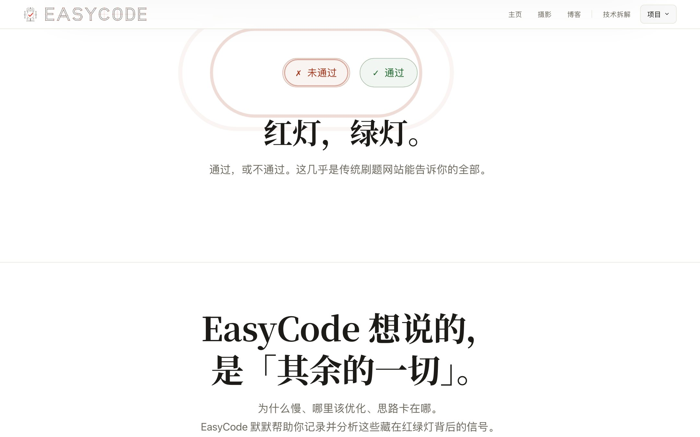

第一屏 · 开场节拍
红灯，绿灯
通过，或不通过。这几乎是传统刷题网站能告诉你的全部。〇红绿灯只判对错，不教你变强。
两枚判定丸(tone-danger 与 tone-ok)接连「落定」,每枚底部荡开三环水波;波纹将尽,一条楷体页边批才一笔写出(clip-path 从左揭开)。向上回滚时顺序反演:通过先撤,未通过后撤。
水波三环 .78s × 错开 .13s页边批 clip-path inset 揭写方向感知重演(JS 调度器)